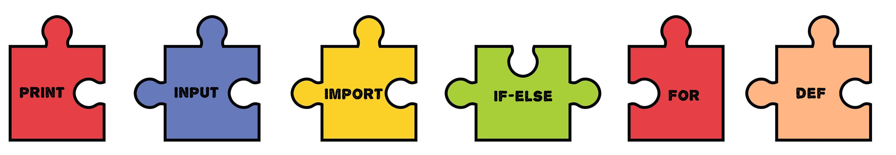

Добро пожаловать! Это - уже 10 урок нашего курса!
Что бы нам с Вами, закрепить прошлый материал - давайте пройдем обстоятельный тест!
Давайте, для начала, кое-что вспомним! Нами уже на данный момент изучены 6 больших инструментов python. Картинка ниже - напомнит Вам о том, что нам уже известно!

Сегодня, мы с Вами поговорим о том, как комбинировать все эти инструменты вместе, и собирать из них довольно большие и масштабные проекты! Мы сделаем первую небольшую игру и поговорим о том, как алгоритмы могут ускорить работу программы!
Проект "Бинарный Поиск"
Представьте, к луне на огромной скорости летит космический корабль. На этом корабле находится автономный лунный модуль, который в определенный момент - нужно отсоединить от ракеты. Момент - когда лунный модуль можно отсоединить --> очень короткий - всего 5 секунд. За эти 5 секунд, управляющая программа должна определить с какой скоростью включить двигатели несущей ракеты, в какой момент произвести отсоединение, какие погодные и ландшафтные условия на данном участке Луны. Всего 5 секунд, на все эти действия. И если не успеть, миссия провалена. Весь этот пример - обозначает, что некоторые программы --> должны уметь работать потрясающе быстро! Но! Может ли человек справляться с большими задачами (особенно на перебор) - быстрее?
Допустим, Вы ищете фамилию человека в телефонной книге (Древняя технология). Фамилия - начинается с буквы "К". Если не начинать листать справочник с самого начала, можно существенно ускорить поиск. Для этого - можно открыть книгу где-то посередине, так как буква "К" должна быть ближе к середине. Точно так же, если Вы ищете слово в словаре, начинающееся с буквы "О", лучше начать с середины.
Или представьте, что Вы вводите свои данные для входа в социальной сети "Вконтакте". Вконтакте - должен проверить, есть ли у Вас учетная запись на сайте. Для этого сайту - нужно найти Ваше имя и пароль пользователя в в_своей базе данных. Вместо того чтобы начинать с буквы "А" и проверять все по порядку, сайте VK.com разумнее начать с середины cвоей базы данных.
А вообще вспомните, в детстве вы точно также - играли в игру, где нужно было угадать загаданное число, которое, нам кто-то загадал. Чаще всего мы полагались на интуицию, но могли бы использовать хитрую логику и всегда выигрывать!
Во всех этих случаях мы сталкиваемся с задачей поиска, и для ее решения можно использовать один алгоритм - бинарный поиск. Бинарный поиск - это некая идея, что если есть упорядоченные данные. То можно искать в них что-то не перебирая элементы по одному, а постоянно целиться в середину. Каждый раз отсекая половину неверных ненужных данных. Посмотрите как на картинке ниже, два алгоритма ищут цифру 9. Линейный алгоритм просто перебирает цифры одна за другой. А вот бинарный алгоритм используя проверку чисел по-середине - оказывается быстрее!

Что же мы попытаемся с Вами сегодня сделать? Мы напишем небольшую игру! Компьютер будет случайным образом выбирать число от 1 до 100 (включительно). А далее компьютер предложит Вам 7 раз сделать одно и тоже! А именно Вам будет предложено угадать это число, Если угадаете за 7 попыток, то вы выйграли. А если спустя 7 попыток, вы все еще не сможете угадать число, вы проиграли!
То есть вы сможете выйграть если поймете, как работает бинарный поиск, и как, с его помощью - ускорять свои действия.
Попробуем сначала сыграть самостоятельно. Сами! Это могло бы быть примерно так:
Хорошо, давайте начнем игру! И будем использовать бинарный поиск, что бы угадывать быстро!
Вами загадано некое число! От 1 до 100! И Вы даете мне только 7 попыток его отгадать!
1. Начну с предположения, что загаданное число равно 50 (середина диапазона от 1 до 100).
2. Затем я задам вопрос: "Загаданное число больше 50 или меньше?"
3. В зависимости от ответа, я буду сужать диапазон поиска. Например, если загаданное число больше 50, то я буду искать в диапазоне от 51 до 100.
4. Затем я выберу середину нового диапазона (середина диапазона 51 - 100 - это 75) и задам вопрос снова.
5. Я буду повторять этот процесс, сужая диапазон поиска каждый раз вдвое, пока не угадаю число или не закончатся попытки.
6. Если я угадываю число, то игра заканчивается и я сообщаю результат. Если же заканчиваются попытки и я не угадал число, то сообщаю об этом.
Полное описание ходов:
1. Предположение: 50
2. Ваш Ответ: Загаданное число больше 50
3. Новый диапазон: 51-100
4. Предположение: 75
5. Ваш Ответ: Загаданное число меньше 75
6. Новый диапазон: 51-74
7. Предположение: 62
8. Ваш Ответ: Загаданное число больше 62
9. Новый диапазон: 63-74
10. Предположение: 68
11. Ваш Ответ: Загаданное число меньше 68
12. Новый диапазон: 63-67
13. Предположение: 65
14. Ваш Ответ: Загаданное число больше 65
15. Новый диапазон: 66-67
16. Предположение: 66
17. Ваш Ответ: Загаданное число найдено!
Таким образом, я буду сужать диапазон поиска вдвое на каждом шаге, используя информацию об отношении загаданного числа к моему предположению. Это позволяет мне быстро сокращать возможные варианты и угадывать число за ограниченное число попыток.

Отлично! Разделим написание такого проекта на небольшие задачи!
- Научить компьютер загадывать случайное число - команда import
- 7 раз дать пользователю попытку отгадать - цикл
- Давать пользователю возможность вводить числа с клавиатуры - input
- Научить программу - отвечать пользователю, больше ли введенное им чиcло ---> загаданного или меньше. Эту неопределенность будем решаем с помощью - if и else
- Будем выводить на экран сообщение о победе или пройгрыше - print
Сначала, решим задачу определения случайного числа. Для этого нам может пригодиться чужая программа с названием random. В этой программе есть команды которые просят компьютер выбрать случайное число из диапазона.
используя ключевое слово import позаимствуем из программы random команды, и сложим эти команды в коробку r. Так же нам имеет смысл сразу позаимствовать команды из программы turtle.
Так что первые две строчки нашей программы будут:
import turtle as t
import random as r
А что бы воспользоваться командой из программы random по поиску случайного числа - используем такую строчку.
n = r.randint(1,100) #тут бы просим компьютер выбрать случайное число от 1 до 100 и сохранить его в переменной n.
Наша первая задача выполнена! Мы научились выбирать случайное число!

Решаем вторую задачу! Теперь задумаемся - мы должны угадать число с семи попыток! Значит мы должны 7 раз повторять команду input(). А если в нашей программе в одном и том же месте что-то будет повторяться, нам нужно использовать цикл for на 7 повторов. Поэтому - следующей нашей строчкой программы станет -->
for i in range(7): # цикл
То есть - мы создаем цикл, который будет перебирать числа 0,1,2,3,4,5,6 и пока эти числа перебираются в мусорной переменной. Цикл будет повторять инструкции, которые мы укажем внутри него при помощи отступов!
Решаем третью задачу - будем запрашивать число с клавиатуры! Для этого, конечно же, мы будем использовать команду input(). Внутри скобочек - мы разместим подсказу "Введи число". И будем все это сохранять в переменную x. Но не забывайте, все что пользователь введет с клавиатуры - будет являться символом, и вести себя будет как символ.
То есть если вы с клавиатуры по запросу команды input() ведете число 10 - то в компьютер оно попадет как символ - '10'. Что бы этого избежать мы немного модифицируем команду input(). И в нашей программе следующая строчка станет такой.
x = int(input())
обертка int() - обозначает, что мы пытаемся превратить символ "10" в число 10!
Четвертая задача! То число, которое пользователь введет в команду input(). Будет являться неопределенностью, поскольку прямо сейчас - заранее мы не можем предсказать, какое именно это будет число. Если пользователь вводит число, то программа может пойти по трем сценариям.
- Пользователь угадал число и тогда мы должны вывести ему на экран командой print() - сообщение "ты угадал"
- Пользователь ввел число и оно оказалось меньше загаданного - так и скажем в команде print()
- Пользователь ввел число и оно оказалось больше загаданного - так и скажем в команде print()
Раз у нас три пути - то потребуются три варианта действий. Распишем их!
if x == n: # если введенное число совпало с загаданным
print('ты угадал число')
break
elif x > n: # если введенное больше загаданного
print('Твое число слишком большое, ищи в меньшем диапазоне')
else: # отводится варианту когда введенное число меньше заданного
print('Твое число слишком маленькое, ищи в большем диапазоне')
Отлично! Теперь мы справились и с задачей неопределенности!
Осталось совсем немногое! Пятая задача! В конце нам нужно определить - победили мы или проиграли! Для этого добавим вот такой блок кода к нашему циклу.
else:
print('вы проиграли')
Да, у цикла for тоже есть команда else, она срабатывает если цикл не прерывали, конструкций break.
В конечном итоге, вся программа будем выглядеть так:
import random as r
import turtle as t
n = r.randint(1, 100)
for i in range(7):
x = int(input())
if x == n:
print('ты угадал число')
break
elif x > n:
print('Твое число слишком большое, ищи в меньшем диапазоне')
else:
print('Твое число слишком маленькое, ищи в большем диапазоне')
else:
print('Вы проиграли')
Наш первый проект - готов и работает. Отточите на нем свои навыки бинарного поиска. И попробуйте уверенно побеждать компьютер. Так же в этом проекте сделайте сами одно задание:
вместо команды print() - попробуйте выводить сообщения о победе или пройгрыше командой t.write('You Win') или t.write('You Lose')